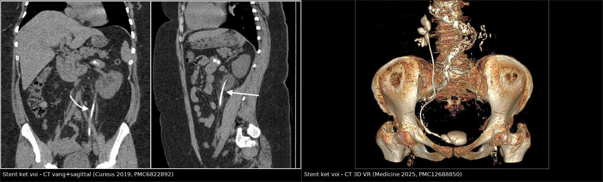
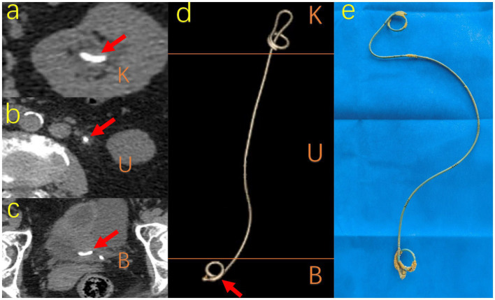
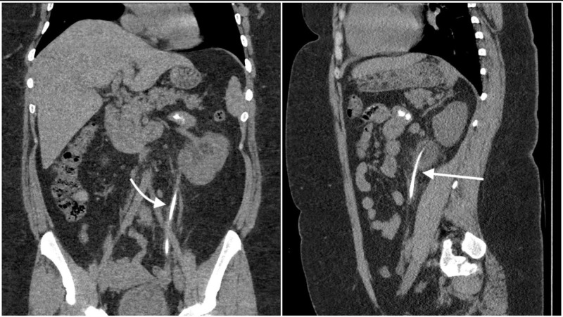
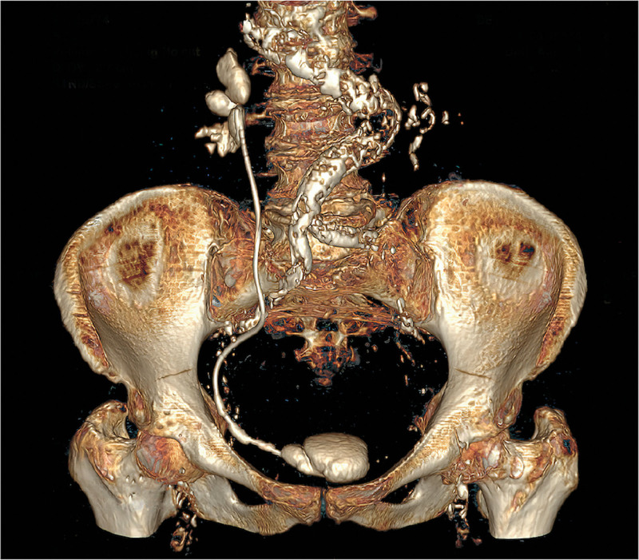

1660 — Stent niệu quản lưu quên & kết vôi (forgotten/retained encrusted ureteral stent)
Tags: pattern:di-vat pattern:ket-voi pattern:voi-hoa vung:nieu-quan vung:bang-quang vung:than score:FECal score:KUB-score score:V-GUES protocol:CT-KUB-khong-can-quang protocol:dan-luu-qua-da incidentaloma:stent-luu-quen
Mức chắc chắn (certainty): tổng hợp y văn (literature synthesis) — tổng quan có hệ thống 147 nghiên cứu/1.292 ca stent lưu quên (BMC Urology 2024, PMC10913558), hướng dẫn thực hành + thuật toán của nhóm EAU Young Academic Urology (Central European Journal of Urology 2021, PMC8771125), chuẩn thực hành CIRSE 2026 về đặt/đổi stent niệu quản (PMC12963180), đoàn hệ 354 ca có CT trước rút stent (Frontiers in Medicine 2023, PMC10433756), loạt 33 ca đối chiếu thời gian lưu – độ kết vôi (J Clin Med 2025, PMC12194611), cùng các ca nguyên văn có ảnh (PMC6822892, PMC12688850, PMC13544750). Số nào chỉ là suy luận của người viết đều được ghi rõ.
Câu chốt: stent niệu quản lưu quên không phải "một dị vật lành tính chờ rút", mà là quả bom kết vôi theo thời gian: nguy cơ kết vôi 9,2% ở 6 tuần → 47,5% ở 6–12 tuần → 76,3% sau 12 tuần, và 76–90% sau 12 tháng. CT không cản quang lát mỏng là chuẩn vàng để đo gánh nặng vôi hóa, phân độ FECal (1–5) / KUB score (3–15) rồi mới chọn đường can thiệp. Ba bẫy chết người: cố rút stent "thấy dễ" trên đài → gãy stent/đứt niệu quản, bỏ sót mảnh stent gãy còn lại, và nhầm cản quang tồn dư trong niệu quản với stent kết vôi.
1. Tổng quan bệnh học – cơ chế hình ảnh
1.1 Định nghĩa và dịch tễ
- Stent lưu quên (forgotten ureteral stent, FUS): stent được đặt đúng chỉ định nhưng không được rút đúng hẹn; tổng quan hệ thống định nghĩa là lưu > 2 tháng (PMC10913558). Không đồng nghĩa với "stent hỏng" — stent vẫn có thể thông.
- Tần suất: 0,9–12% bệnh nhân đặt stent bị lưu quên (PMC10913558; PMC13544750).
- Thời gian lưu trung bình 33,5 tháng, dao động 3 tháng – 32 năm (147 nghiên cứu, 1.292 ca; PMC10913558). Ca dài nhất: nữ 59 tuổi, hai stent kết vôi nặng lưu 32 năm, đặt "dự phòng" khi cắt tử cung.
- Nguyên nhân quên: phía bệnh nhân 83,9% (kém tuân thủ, quên, hiểu sai là "không cần rút"), phần còn lại do hệ thống y tế không có sổ theo dõi/không hẹn rút (PMC10913558).
- Triệu chứng khi đến: đau mạn sườn 37,3%, triệu chứng đường tiểu dưới 33,3%, đái máu 22,8%, sốt/nhiễm khuẩn 19,2%, không triệu chứng 10,8% (PMC10913558) — nghĩa là một phần đáng kể chỉ phát hiện tình cờ trên CT.
- Biến chứng gặp: kết vôi 80,8%, nhiễm khuẩn niệu 40,2%, suy giảm chức năng thận, gãy stent, di trú, thủng niệu quản, cắt thận khi thận mất chức năng (PMC10913558; PMC13544750).
- Tới 10% bệnh nhân lưu stent vẫn mất theo dõi và không được rút dù đã tư vấn (PMC10913558).
- Hệ quả pháp lý: stent lưu quên từng chiếm tới 16% các vụ kiện trong lĩnh vực nội soi tiết niệu (PMC10433756).
1.2 Sinh lý bệnh: vì sao stent "mọc đá"
- Trong vài giờ sau đặt, bề mặt polymer bị phủ màng sinh học (conditioning film) gồm protein, ion và tế bào — đây là "keo dính" cho tinh thể.
- Vi khuẩn bám và tạo biofilm; loài sinh urease (Proteus, Klebsiella, Pseudomonas) thủy phân urê → NH₃ → nước tiểu kiềm → kết tủa struvite (MgNH₄PO₄) và carbonate apatite.
- Song song, calci oxalat/phosphate kết tủa trực tiếp trên bề mặt và trong lớp biofilm — đây là thành phần chính của lớp vôi hóa nhìn thấy trên CT.
- Thời gian lưu là yếu tố nguy cơ mạnh nhất (PMC8771125). Các yếu tố khác: tiền sử sỏi, nước tiểu nhiễm khuẩn, thai kỳ (giãn niệu quản sinh lý + kết vôi nhanh), stent kim loại, bệnh thận mạn.
- Đổi màu đen của stent sau rút gắn chặt với nhiễm E. coli/Klebsiella/Enterococcus (p < 0,001) và với thời gian lưu dài (p < 0,001) — dấu hiệu đại thể, không thấy trên hình ảnh (PMC12194611).
1.3 TẠI SAO hình ảnh trông như vậy (vật lý + mô bệnh)
- Stent polymer được pha chất cản quang nên luôn tăng đậm độ trên X-quang/CT, kể cả khi chưa kết vôi. Lớp kết vôi là muối calci (Z hiệu dụng và mật độ cao) → cực sáng trên CT, tương đương sỏi canxi; vì vậy trên cửa sổ xương lớp vôi hóa nổi bật hơn hẳn thân stent.
- Vì sao CT thắng X-quang: phim KUB là ảnh chiếu (projection) — vôi hóa stent, sỏi niệu quản và vôi hóa động mạch chậu chồng lên nhau, không định khu được theo chiều sâu; phim thường không lập bản đồ chính xác vị trí vôi hóa (PMC8771125). CT lát mỏng cho đậm độ định lượng + định vị 3 chiều, đo được độ dày lớp vôi và dựng 3D VR để thấy toàn bộ stent. Trong tổng quan 147 nghiên cứu, CT là phương thức được ưu tiên ở 76,1% ca (PMC10913558).
- Vì sao lớp vôi mỏng dễ bị bỏ sót: thể tích lớp vôi nhỏ + hiệu ứng một phần thể tích (partial volume) với nước tiểu/thành niệu quản → trên lát dày 5 mm, lớp 1 mm có thể chỉ làm "dày nhẹ" thân stent. Lát ≤ 1–2 mm làm giảm hiệu ứng này (khuyến cáo kỹ thuật, không phải ngưỡng từ thử nghiệm).
- Vì sao 3D VR hữu ích: tái tạo bề mặt theo ngưỡng đậm độ tách thân stent khỏi xương chậu → thấy đoạn kết vôi, chỗ gãy, đầu coil lạc chỗ trong một ảnh, đúng như hình 1660-C3D.
- Ngưỡng định lượng: nguy cơ kết vôi 9,2% ở 6 tuần · 47,5% ở 6–12 tuần · 76,3% sau 12 tuần (Dyer, trích trong PMC10433756); 56,8% ở 6–12 tuần và 75,9% sau 12 tuần (Kawahara), 76,6% sau 12 tuần (el-Faqih) (PMC8771125); 76–90% sau 12 tháng, gần 100% sau 18 tháng (báo cáo ca 2026, PMC13544750). Tỷ lệ kết vôi thực tế trong hai đoàn hệ có CT trước rút: 37,4% (101/270) và 38,1% (32/84) (PMC10433756).
1.4 Gánh nặng lâm sàng – can thiệp
- 59,0% ca cần nhiều thì hoặc nhiều phương thức để sạch stent/sỏi (PMC10913558).
- Đường can thiệp thường dùng: nội soi bàng quang ± tán sỏi bàng quang 64,8%, niệu quản soi ngược 43,4%, lấy xuôi qua PCNL 31,6%, sóng xung kích hỗ trợ 30,4%, mổ nội soi/mở 6,7% (gồm cả cắt thận) (PMC10913558).
- Loạt 12 ca kết vôi cả hai đầu: rút trọn trong 1 thì bằng phối hợp xuôi + ngược đồng thời, thời gian mổ 72,9 ± 45,9 phút, 1 biến chứng Clavien–Dindo II, không truyền máu (PMC12688850) — cho thấy ca chọn lọc có thể "1 thì", nhưng không được mặc định.
- Kháng sinh: nhóm này có tỷ lệ E. coli kháng quinolone > 90%; cấy nước tiểu trước can thiệp là bắt buộc (PMC8771125).
2. Mẫu hình + chẩn đoán phân biệt theo vị trí (gamut)
Mẫu hình chính: cấu trúc dạng ống, bờ đều, tăng đậm độ, chạy đúng đường niệu quản, có lớp vôi hóa bám không đều (dày ở coil, mỏng ở thân) ± sỏi lớn ở đầu coil bàng quang.
| Vị trí (theo FECal) | Hình ảnh chốt | Gamut cần loại trừ |
|---|---|---|
| K — coil thận (FECal 1 phần) | Vôi hóa dạng vòng/cụm ở bể thận, dính vào đầu stent | Sỏi bể thận, vôi hóa động mạch thận, cặn cản quang tồn dư, u thận vôi hóa, nang canxi sữa |
| U — thân niệu quản | Đường vôi hóa mảnh, liên tục dọc niệu quản, "như sợi chỉ đá" | Sỏi niệu quản, vôi hóa động mạch chậu/vôi hóa mạch, xơ hóa lao – sán máng, cục máu vôi hóa, mảnh stent gãy |
| B — coil bàng quang | Sỏi lớn bám đầu coil ("đá cuội" trong bàng quang) ± sỏi bàng quang tự do | Sỏi bàng quang, u bàng quang vôi hóa, vôi hóa bóng Foley, dị vật, sỏi quanh stent khác |
| Toàn bộ stent | Vôi hóa cả 3 đoạn, có thể gãy nhiều đoạn, di trú | Gãy stent đơn thuần (không kết vôi), stent di trú vào bể thận/bàng quang, stent xuyên thủng niệu quản |
- Phân bố vị trí thực tế (101 ca kết vôi): U 60 · B 24 · K 4 · KB 7 · UB 5 · KUB 1 (PMC10433756) — thân niệu quản và coil bàng quang là nơi hay gặp nhất, không phải coil thận.
- Phân biệt theo bối cảnh: đau mạn sườn + tiền sử đặt stent + không có sỏi thận mới → nghĩ stent lưu quên trước khi nghĩ "sỏi tái phát".
3. Bảng so sánh phân biệt (ma trận đối chiếu)
| Thực thể (entity) | Hình ảnh điển hình (CT KUB lát mỏng) | Chốt vào (rule-in) | Chốt loại (rule-out) | Gợi ý xác nhận |
|---|---|---|---|---|
| Stent kết vôi (encrusted stent) | Cấu trúc dạng ống liên tục, đậm độ cao, lớp vôi bám quanh thân, chạy đúng đường niệu quản, hai đầu cuộn | Hình dạng ống + hai coil + vôi hóa bám không đều theo đoạn K/U/B | Có đầu coil trong bể thận và bàng quang loại trừ sỏi đơn thuần; không có cấu trúc ống loại trừ stent | CT 3D VR + FECal/KUB score; đối chiếu hồ sơ đặt stent |
| Sỏi niệu quản | Cục tăng đậm độ khu trú, ± "đuôi sao", dừng dòng nước tiểu, giãn niệu quản trên | Vị trí 3 điểm hẹp sinh lý (khớp thắt lưng–cùng, bắt chéo mạch chậu, lỗ niệu quản) + không có ống stent | Có bóng stent xuyên qua loại trừ sỏi đơn thuần (nhưng có thể sỏi bám stent) | So sánh với hồ sơ; xem toàn bộ chiều dài niệu quản trên MPR |
| Cản quang tồn dư (residual IV contrast) | Dịch tăng đậm độ trong lòng niệu quản, bờ mềm, không có cấu trúc ống cứng, thay đổi giữa các lát | Tiền sử chụp cản quang trong 24 giờ + đậm độ giảm dần theo thời gian | Không có coil, không có vỏ canxi; đậm độ không đều kiểu "vệt nước" | Hỏi tiền sử chụp; chụp lại sau 24–48 giờ nếu cần (ca 53 tuổi bị nhầm là "stent canxi hóa", PMC12909285) |
| Vôi hóa động mạch chậu/mạch máu | Đường vôi hóa theo thành mạch, có thể hai bên đối xứng, không đi vào bể thận | Đường đi theo mạch + không có coil | Không liên tục tới bể thận/bàng quang | MPR theo trục mạch; so sánh với ĐM chậu đối bên |
| Sỏi bàng quang | Sỏi tròn/lớn trong lòng bàng quang, có thể không dính stent | Không có tiếp nối với ống stent; bờ sỏi tròn đều | Có "đuôi" vôi hóa chạy lên niệu quản → sỏi bám stent | Xem đầu coil dưới trên MPR; đổi tư thế/so sánh nếu cần |
| Stent gãy/di trú (fractured/migrated) | Mất liên tục thân stent, mảnh rời trong niệu quản/bể thận/bàng quang | Đoạn stent không liên tục + mảnh rời cùng đậm độ | Stent liền một khối loại trừ gãy | 3D VR; đếm đủ hai coil; kiểm tra mảnh dưới bóng Foley |
- Ảnh ghép đối chiếu:

— trái: CT vành + sagittal thấy lớp vôi hóa bám thân stent (mũi tên); phải: CT 3D VR thấy toàn bộ stent + sỏi lớn ở coil bàng quang. Tạo bằngtools/make_composite.py(letterbox, giữ tỉ lệ).
4. Protocol chụp + hệ phân độ/điểm chuẩn hóa
4.1 Protocol
- Bước 1 — X-quang KUB: rẻ, dễ làm, phát hiện stent và sỏi lớn, nhưng không lập bản đồ chính xác vị trí/độ dày vôi hóa (PMC8771125).
- Bước 2 — CT không cản quang (NCCT) toàn bộ hệ tiết niệu: phương thức được chọn để đánh giá kết vôi, di trú, gãy stent và thận đối bên (PMC8771125; PMC10913558). Kỹ thuật gợi ý: lát ≤ 1–2 mm, tái tạo mặt phẳng vành/sagittal, cửa sổ xương để đo vôi hóa + cửa sổ mô mềm để đánh giá thận/niệu quản, dựng 3D VR khi nghi kết vôi toàn bộ.
- Bước 3 — chức năng thận: khi nghi thận mất chức năng (teo, ứ nước nặng, vỏ mỏng) → xạ hình DMSA trước khi quyết định cắt thận; ca báo cáo dùng DMSA < 10% làm ngưỡng cắt thận (PMC13544750).
- Bước 4 — nhiễm khuẩn: cấy nước tiểu trước can thiệp, điều trị theo kháng sinh đồ; nếu ứ mủ + nhiễm trùng toàn thân → dẫn lưu qua da (PCN) trước rồi mới lấy stent (PMC8771125).
- Bước 5 — theo dõi sau can thiệp: KUB/CT kiểm tra sạch sỏi + đăng ký stent (stent register) với ngày hẹn rút (PMC12963180).
4.2 Hệ phân độ
| Hệ | Cấu trúc | Ngưỡng / ý nghĩa |
|---|---|---|
| FECal (Forgotten Encrusted CALcified) | 5 độ theo vị trí vôi hóa: 1 = chỉ coil dưới; 2 = coil dưới + thân niệu quản dưới; 3 = lan tới niệu quản giữa, cả hai coil vôi một phần; 4 = kết vôi toàn bộ stent (cả hai coil + thân); 5 = kết vôi hoàn toàn + gánh nặng sỏi lớn + suy chức năng thận | Công cụ gốc và dùng nhiều nhất, giúp lập kế hoạch đa phương thức; FECal 4–5 = can thiệp phức tạp, nhiều thì (PMC8771125; PMC13544750) |
| KUB score | Chấm 3 đoạn: K (coil thận), U (thân), B (coil bàng quang), mỗi đoạn 1–3 điểm → tổng 3–15 | ≥ 9 điểm liên quan nguy cơ cần nhiều lần mổ, nhiều phương thức và thời gian mổ > 3 giờ (PMC8771125) |
| V-GUES | Phân độ A–D theo khả năng lấy được stent + sỏi | Dùng để tiên lượng thành công, bổ sung cho FECal (PMC8771125) |
| Clavien–Dindo | Biến chứng sau can thiệp | Loạt 12 ca: 1 biến chứng độ II, không có độ III–V (PMC12688850) |
4.3 Thuật toán xử trí
flowchart TD
A[Stent lưu quá hạn hoặc tình cờ thấy stent kết vôi] --> B{Có sốt, ứ mủ, suy thận cấp?}
B -->|Có| C[Dẫn lưu PCN + kháng sinh theo cấy]
C --> D
B -->|Không| D[NCCT lát mỏng + 3D VR: chấm FECal và KUB score]
D --> E{FECal 1-2 và KUB < 9?}
E -->|Có| F[Nội soi bàng quang ± URS ngược, có thể 1 thì]
E -->|Không| G[Kế hoạch đa phương thức: URS + PCN/PCNL + SWL, có thể nhiều thì]
G --> H{Thận mất chức năng trên DMSA?}
H -->|Có, DMSA < 10%| I[Cắt thận + lấy sỏi bàng quang cùng thì]
H -->|Không| J[Lấy từng phần, đặt stent mới, hẹn đổi 4-6 tháng]
F --> K[Đăng ký stent + hẹn rút + cấy kiểm tra]
J --> K
I --> K
- Nguyên tắc vàng: không kéo mạnh khi stent "không ra" — lực kéo là nguyên nhân gãy stent và đứt niệu quản; phải dừng, chụp lại và chuyển kế hoạch (PMC10433756; PMC8771125).
- Số thì: đa số loạt báo cáo cần 1–3 lần mổ; một số ca chọn lọc làm 1 thì (PMC8771125; PMC12688850).
- Phòng ngừa (quan trọng hơn điều trị): đổi stent định kỳ 4–6 tháng với stent polymer lưu lâu; tối đa 2–3 tháng nếu còn sỏi hoạt động cùng bên; 3–6 tháng để phòng stent nhiễm; tránh đặt stent trong thai kỳ nếu có lựa chọn khác; sổ đăng ký stent + nhắc hẹn cho mọi bệnh nhân (PMC12963180; PMC10913558).
- Tư vấn bệnh nhân: nói rõ stent phải được rút, ghi ngày hẹn bằng văn bản, và cảnh báo triệu chứng quay lại (PMC10913558).
5. Biến thể bình thường và cạm bẫy
- "Stent không kết vôi" ≠ "không quên": stent vẫn nằm đúng vị trí, không có lớp canxi → hình ảnh bình thường; chẩn đoán lưu quên dựa vào hồ sơ/ngày đặt, không dựa vào hình ảnh.
- Cản quang tồn dư trong niệu quản sau CT có cản quang 24 giờ trước đó: bờ mềm, đậm độ không đều, không có coil; ca 53 tuổi bị nhầm là "stent canxi hóa" và phải hội chẩn chuyên khoa (PMC12909285). Luôn hỏi tiền sử chụp cản quang trước khi gọi "dị vật".
- Vôi hóa mạch chậu chạy song song niệu quản đoạn xa: trên lát trục, vôi hóa thành động mạch có thể trông như "sỏi niệu quản"; theo dõi trên MPR và so sánh với mạch đối bên.
- Sỏi bám stent vs sỏi bàng quang tự do: sỏi tự do không có "đuôi" vôi hóa nối lên niệu quản; phải đếm đủ hai coil và xem toàn bộ chiều dài stent.
- Stent gãy để lại mảnh: mảnh không cản quang? — không, mọi stent đều cản quang, nhưng mảnh nhỏ có thể bị bỏ qua khi chỉ nhìn ảnh trục; luôn dựng 3D/MPR và đếm lại. Ca gãy + thoát ra niệu đạo đã được báo cáo (PMC13594378).
- Bỏ sót thận đối bên: nguyên tắc "satisfaction of search" — thấy stent kết vôi một bên rồi dừng; phải xem thận/niệu quản đối bên, vì stent hai bên đã gặp và gây mất chức năng thận (PMC13544750).
- Thai kỳ: giãn niệu quản sinh lý + kết vôi nhanh; stent dễ di trú và nhiễm khuẩn — hạn chế đặt, nếu buộc phải đặt thì theo dõi sát và đổi sớm (PMC12963180).
- "Rút được" trên đài ≠ an toàn: nội soi thấy đầu coil dễ → kéo; nếu lớp vôi bám thân, lực kéo truyền vào niệu quản. Dừng ngay khi thấy căng, chuyển CT/3D và kế hoạch đa phương thức.
6. Tự lượng giá — Blind Quiz
Ca 1 — Nữ 69 tuổi, đặt stent niệu quản 322 ngày, "quên" rút

- Gợi ý lâm sàng: không triệu chứng rõ, đến vì kiểm tra định kỳ; tiền sử sỏi thận.
- Câu hỏi: (1) Mô tả lớp tăng đậm độ bám quanh stent ở 3 mức K/U/B. (2) Chấm FECal và KUB score. (3) Vì sao CT lát mỏng tốt hơn KUB ở ca này?
Bấm để hiện đáp án (findings + chẩn đoán)
- Dấu hiệu: (A) coil thận có vôi hóa dạng cụm; (B) thân niệu quản có lớp vôi mảnh chạy dọc; (C) coil bàng quang có sỏi lớn bám; (D) 3D VR thấy toàn bộ stent; (E) stent sau rút lộ rõ các cục vôi ở hai đầu.
- Chẩn đoán: stent kết vôi toàn bộ 3 đoạn (FECal 4) — vôi hóa cả K, U, B; gánh nặng vôi ở coil bàng quang lớn nhất.
- Vì sao: muối calci đậm độ cao; CT định vị 3 chiều + đo độ dày, còn KUB chiếu chồng các cấu trúc.
- Nguồn ảnh: Frontiers in Medicine 2023, Figure 3 — PMC10433756, CC BY 4.0 (nguyên bản, không crop).
Ca 2 — Nữ 29 tuổi, đau hông lưng trái 2 tuần, tiểu buốt, nôn

- Gợi ý lâm sàng: sỏi thận đã biết; đặt stent niệu quản hơn 1 năm trước ở cơ sở khác; bệnh nhân không biết phải rút; WBC 11,21 × 10³/µL, niệu máu 2+.
- Câu hỏi: (1) Vì sao thận trái ứ nước nặng dù "đã có stent"? (2) Dấu hiệu nào trên CT xác nhận stent kết vôi? (3) Bước xử trí đầu tiên?
Bấm để hiện đáp án (findings + chẩn đoán)
- Dấu hiệu: thận trái ứ nước nặng, stent mất chức năng dẫn lưu vì kết vôi bám thân (mũi tên trắng); lớp vôi hóa chạy dọc niệu quản trên mặt phẳng vành và sagittal.
- Chẩn đoán: stent lưu quên > 1 năm, kết vôi gây tắc + nhiễm khuẩn niệu (WBC tăng, niệu máu).
- Xử trí: cấy nước tiểu + kháng sinh, hội chẩn tiết niệu; nếu ứ mủ/sốt → dẫn lưu PCN trước, rồi lấy stent theo kế hoạch (không kéo mù).
- Vì sao: lớp vôi làm hẹp lòng stent → mất dẫn lưu; hình ảnh "stent vẫn nằm đúng chỗ" không đồng nghĩa stent còn tác dụng.
- Nguồn ảnh: Cureus 2019, Figure 1 — PMC6822892, CC BY 4.0 (nguyên bản, không crop).
Ca 3 — CT 3D VR của một stent "đã quên"

- Gợi ý lâm sàng: loạt 12 bệnh nhân kết vôi cả hai coil, thời gian lưu trung bình 17,1 ± 12,8 tháng.
- Câu hỏi: (1) Mô tả hai ổ vôi hóa lớn nhất. (2) Vì sao 3D VR hữu ích trước mổ? (3) FECal dự kiến?
Bấm để hiện đáp án (findings + chẩn đoán)
- Dấu hiệu: stent chạy từ bể thận phải xuống bàng quang; coil trên có cụm vôi nhỏ; coil dưới có sỏi lớn dạng "đá cuội" trong bàng quang; thân stent dày, không đều do lớp vôi.
- Chẩn đoán: stent kết vôi cả hai đầu (FECal 3–4), cần kế hoạch đa phương thức; loạt này đã rút trọn 1 thì bằng phối hợp xuôi–ngược ở ca chọn lọc.
- Vì sao: 3D VR tách stent khỏi xương chậu, thấy đoạn kết vôi + sỏi đầu coil trong một ảnh → lập kế hoạch dụng cụ/thì mổ.
- Nguồn ảnh: Medicine 2025, Figure 1 — PMC12688850, CC BY 4.0 (nguyên bản, không crop).
Bài liên quan chéo
- 1620 – Ứ nước thận, urinoma & khối tiểu khung lành tính
- 152 – Sỏi niệu, ứ nước & nhiễm trùng niệu trên
- 190 – Sỏi đường niệu trên & sỏi thận ghép ở bàng quang thần kinh
- 137 – Theo dõi stent/dẫn lưu đường mật: di trú, tắc, nhiễm trùng — cùng nguyên lý "dị vật lưu lâu = nhiễm + tắc + di trú", khác khoang.
Ảnh
images/1660_stent-luu-quen_CT_PMC10433756-F3.jpg— CT 3 mức K/U/B + 3D + stent sau rút; Front Med 2023 (PMC10433756), CC BY 4.0.images/1660_stent-luu-quen_CT_PMC6822892-F1.jpg— CT vành + sagittal; Cureus 2019 (PMC6822892), CC BY 4.0.images/1660_stent-luu-quen_CT3D_PMC12688850-F1.jpg— CT 3D VR; Medicine 2025 (PMC12688850), CC BY 4.0.images/composite_stent-luu-quen_CT.jpg— ảnh ghép 2 ô (CT vành/sagittal + CT 3D VR), tạo bằngtools/make_composite.py.- Ghi công đầy đủ + giấy phép từng file:
images/CREDITS.md.
Không dùng để chẩn đoán độc lập khi chưa có người hướng dẫn.